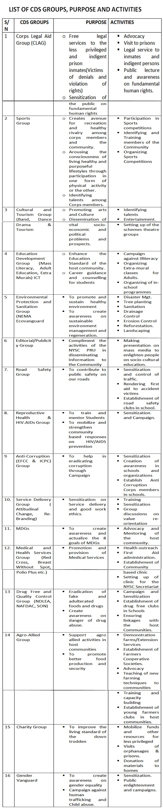

COMMUNITY DEVELOPMENT SERVICES AND SPECIAL PROJECTS DEPARTMENT
INTRODUCTION
Community Development Service (CDS) is a year round programme of the NYSC in which corps members are organized to work with local communities to promote and execute development projects in their host communities.
This programme has its ideological base in the need to correct the imbalance in the socio-economic development of our country where rural communities are neglected and infrastructural facilities are concentrated in the urban areas.
NOTE: There are Merit Awards by Mr PRESIDENT for the best projects executed by corps members nationwide.
Objectives of CDS
-
Community Development Service is a complementary assignment for corps members which is expected to be undertaken concurrently with their primary assignment. It is basically the avenue for promoting, facilitating and strengthening self-help projects at local communities. It's objectives hereby includes:
- (a) Impacting positively and practically on improvement in rural community life by motivating the people towards self-help projects for greater self-reliance.
- (b) Developing the spirit of entrepreneurship in the corps members thus de-emphasizing dependence on public service employment and promoting self-employment.
- (c) To utilize the challenges which rural development poses and inculcate in the Nigerian Youth the ideals and capacities for leadership, endurance, selflessness, community service, national service, patriotism and creativity.
- (d) Exposing corps members to diverse traditions and customs of the host communities.
- (e) Providing the forum for corps members to experiment with ideas and translate them into concrete achievements thereby relying less on foreign technology and encouraging the use of local raw materials in the execution of projects.
- (f) Harnessing the enormous talents and skills of corps members into an effective machinery of change in our rural communities.
- (g) Providing on-the-job training and experience for corps members in areas of Health, Law, Education, Agriculture, Social Services, Engineering, etc.
- (h) Providing complementary service in our National development activities, by ensuring that our under-privileged population learn basic techniques of self-help through the appropriate technology concept being promoted by NYSC.
- (i) To instill in corps members the tradition of dignity of labour and productivity
- (j) To complement the activities of government at all levels in the stride towards National development.
How to Identify Projects
The needs assessment of the community should be carried out to identify their needs. There are two basic techniques of carrying out community needs assessment. First is by observation of challenges faced by the community (e.g. lack of portable water, medical facility, educational institution, link road or bridge) or prevalence of a common disease, illiteracy, non-basic skills, ignorance, drug abuse, etc. The Second technique is by discussion with members of the community ranging from youths, market women, opinion leaders and elders. From the community mapping, several needs may be identified.
How to Choose Projects
Two important factors are to guide the choice of projects out of the several identified.
First is the SMART test of project management. This means that the project must be
- SPECIFIC (Well-defined),
- MEASURABLE (Visible outcome when completed),
- ACHIEVABLE (Is It Possible?),
- REWARDING (Benefits) and
- TIME-BOUND (Deadline for completion).
A starving person is in desperate need of food. Giving him/her clothes to wear cannot help them at that material time. That is not his/her felt-needs. A sick person needs medical attention. Giving him/her shoes to use makes no meaning. Similarly, carrying out a community development project that is not the felt-needs of the community, amounts to a futile and meaningless effort. CDS Schedule officers should therefore guide corps members in identifying projects that are the felt-needs of the community.
CDS PROJECT TYPES
The CDS Programme can be classified as follows;
- Group Community Development Service (Group CDS): Corps members are expected to use one day in a week for group CDS activities. They are not expected to attend duties in their places of Primary assignment on CD days. Such days are dedicated to the execution of projects and programmes that will improve the living conditions of their host communities.
- Personal/Individual Community Development Service (Personal/Individual CDS): These are projects/programmes executed by individual corps members in their host communities based on Community felt-needs.
List of CDS Groups
The following is a list of approved CDS Groups, their Purpose and Activities
NYSC Directorate Headquarters
Plot 416, Tigris Crescent
Off Aguiyi Ironsi Street, Maitama.
PMB 138, Garki ,Abuja.
SMS Message
09-2912257
info@nysc.gov.ng